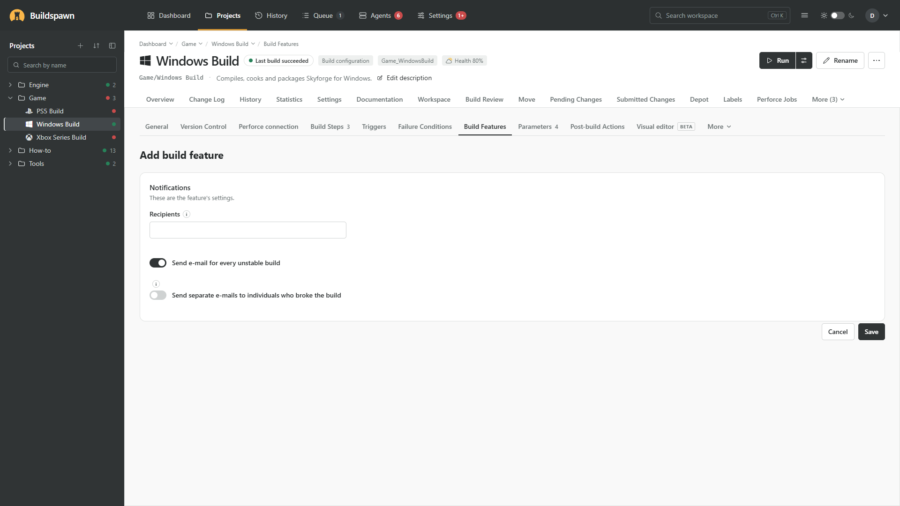

Notifications
Sends an email when a build fails, and when it is fixed.
When to use it
Use it when someone must hear about a broken build without opening Buildspawn. It sends an email for every failed build, for the first successful build after a failure, and for an unstable build after a successful one. An administrator sets the mail server once in the global settings.

How to set it up
- Open the build configuration, click Settings, then Build Features. Click Add build feature and choose Notifications.
- In Recipients type the email addresses, separated by spaces.
- Tick Send separate e-mails to individuals who broke the build if the people who changed the code should hear too.
- Click Save.
Every field
| Field | What it does | Default | Example |
|---|---|---|---|
| Recipients | Whitespace-separated email addresses. You can use build variables. | Empty | build-team@studio.example |
| Send e-mail for every unstable build | On: every unstable build sends an email. Off: only the first one after a successful build. | On | On |
| Send separate e-mails to individuals who broke the build | Email the people whose changes were in the broken build. With no recipients, only they get the mail. | Off | On |
A worked example
The nightly Release Build notifies release-team@studio.example and the people who submitted since the last good build. On a Monday the build fails; the team gets one email. After the fix the team gets one email that the build is good again.
What you see when it runs
Emails come from the mail server in the global settings. The Build Features card says, for example, Email to release-team@studio.example when a build fails and when it is fixed.
Problems and fixes
| Problem | What to do |
|---|---|
| Give at least one recipient, or send to who broke the build | Both are empty. Fill one. |
| No email arrives | Ask an administrator to check the mail server settings and to send a test email. Check the spam folder. |
| Individuals do not get email | Their user must have an email address in their profile, or the server must have a default suffix set. |